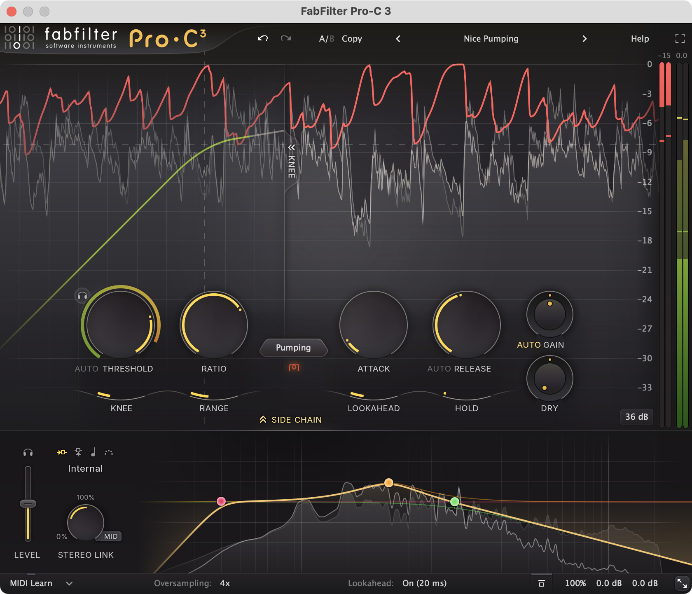
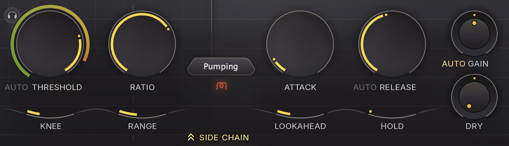
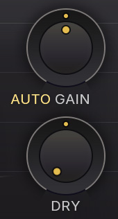

人声塑形 · Pro-C 3
01 / 09
人声压缩
怎样塑形？
原理：FabFilter / iZotope / Ableton · 图为概念示意
从字头、字身，到下一句。
想更有棱角，试着保留起音的相对突出；
想更平顺，试着更早控制起音。
音节力度轮廓 · 概念示意，非录音测量
字头
字身
间隙
下一字
Attack：建立衰减的速度
Release：从衰减恢复的速度
听感还取决于演唱、压缩量和伴奏。

人声塑形 · Pro-C 3
02 / 09
先认清真正的控件
FabFilter Pro-C 3 官方产品截图 · © FabFilter
示例对象：FabFilter Pro-C 3。
官方图用于认控件，不是本篇的人声设置。
图中状态
Nice Pumping 预设 · Pumping 风格
可见 AUTO RELEASE / AUTO GAIN 控件
屏幕曲线是厂商展示内容，非本篇音频测量。

人声塑形 · Pro-C 3
03 / 09
“压多少”和“变多快”，分开
控件定义：FabFilter Pro-C 3 Help · 图片 © FabFilter
先固定压缩风格与其他条件，再听时间参数。
官方局部；Pumping / AUTO 状态不是本篇练习设置。
THRESHOLD
阈值：压缩参考电平。
RATIO
压缩比：阈值以上的
稳态输入输出关系。
ATTACK
建立衰减的速度。
RELEASE
从衰减恢复的速度。
GR = Gain Reduction
本篇用正数表示衰减量：GR 6 dB = 增益降低 6 dB。
GR 不是输出电平，也不直接等于主观响度。
人声塑形 · Pro-C 3
04 / 09
Attack 不会先等着不动
模型公式与数据：本篇独立计算 · 产品行为：FabFilter Help
较慢响应常让快速字头相对多保留一些。
较快响应常让起音更收敛，但仍要看素材。
理想模型：目标 GR 从 0 跳至 6 dB 后保持。
GR / dB
τ = 5 ms
τ = 30 ms
0
2
4
6
0
10
30
60
90
经过时间 / ms
同在 10 ms：5.19 dB 与 1.70 dB GR
两条线一直在变，没有先等 5 / 30 ms 的空档。
GR(t) = 6 × [1 − exp(−t/τ)]
τ 是模型时间常数，不是插件旋钮值；非音频实测。
模型无 Lookahead / Hold；不复刻具体风格或检测器。
人声塑形 · Pro-C 3
05 / 09
下一字来了，还压着多少？
模型公式与数据：本篇独立计算 · 产品行为：FabFilter Help
快恢复可能更灵活，也可能忽大忽小；
慢恢复可能更连贯，也可能压住下一字。
理想模型：6 dB 起，目标归零，无再触发 / Hold。
GR / dB
τ = 100 ms
τ = 300 ms
0
2
4
6
0
100
180
300
400
经过时间 / ms
同在 180 ms：剩余 0.99 dB 与 3.29 dB GR
180 ms 从恢复开始计，不是默认的字头间隔。
GR(t) = 6 × exp(−t/τ)
τ 是模型时间常数，不是插件标称时间；非实测。
实际风格 / Auto Release 随素材变化，GR 不必每次归零。
人声塑形 · Pro-C 3
06 / 09
慢歌，也可能唱得很密
时值公式：60,000 ÷ BPM · 图示起音间隔，非 Release 设置
Release 要看音节密度、持续时长与目标。
不能只凭歌曲快慢决定。
同一线性毫秒轴 · 假设音节按网格起音
80 BPM · 十六分音符
187.5 ms
140 BPM · 四分音符
428.6 ms
0
100
200
300
400
500
四分音符时长 = 60,000 ÷ BPM（ms）
80 BPM 的 1/16 = 60,000 ÷ 80 ÷ 4
起音隔多久 ≠ 留给恢复的时间。
长元音持续触发时，可恢复窗口会更短。
这些是起音间隔计算，不是 Release 建议值。

人声塑形 · Pro-C 3
07 / 09
一句人声，一次只改一项
试听练习 · 产品功能：FabFilter Pro-C 3 Help · 图片 © FabFilter
1 循环一句，带伴奏确认问题
包含强弱、连续字头与句尾，先知道自己要听哪里。
2 固定条件，让比较可听懂
同一风格，固定 Knee / Lookahead / Hold；
学习时暂关 Auto Release / Auto Gain，先不叠 DRY。
3 先听 Attack
例如比较 5 与 30 ms，听字头是否变钝或过尖。
4 再听 Release
例如比较 80 与 250 ms，听句尾起伏与下一字。
每次 A/B，手动匹配响度
Auto Gain 不保证严格响度匹配。
尽量排除“变响了”的影响，
再放回伴奏判断。
数值是练习对照点，不是预设，也不是前页的模型 τ。
官方局部仅定位控件；不要照抄截图状态。
人声塑形 · Pro-C 3
08 / 09
用听到的问题，决定下一步
试听方向：FabFilter / iZotope / Ableton · 详见研究报告
听现象，再选变量；没有必须达到的 GR 数字。
字头变钝
试慢一点的 Attack；也查持续 GR 是否太深。
起音尖、爆破突出
试快一点的 Attack，或先做局部电平整理。
呼吸或音量细碎起伏
试慢一点的 Release，或减少压缩量。
下一字发闷
看剩余 GR；试快一点的 Release 或较浅压缩。
停在：字头合适、字身稳定、下一句自然。
这些是试听方向，不是保证。
连贯控制可以保留一些衰减，GR 不必每次归零。
人声塑形 · Pro-C 3
09 / 09
完整图文与可编辑源码
Kangdi Wang · 阅读 · 核对 · 复用
人声压缩塑形：公式、图解与研究报告。
github.com / DDDPG
music-mixing-secrets ↗
BIBTEX
2026
@misc{wang2026musicmixingsecrets,
author = {Kangdi, Wang},
title = {Music Mixing Secrets},
year = {2026},
url = {https://github.com/DDDPG/}
# {music-mixing-secrets}
}
具体原理请同时核对 FabFilter 等一手资料。
仓库引用不代替原始来源或图片许可。
完整资料与源文件以仓库实际内容为准。